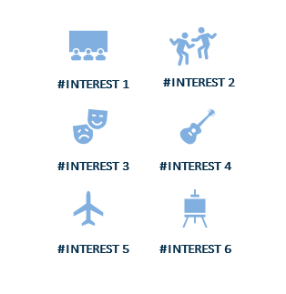

|
Experienced healthcare drone pilot skilled in leveraging advanced aerial technology to enhance medical logistics and emergency response efforts. Proficient in RPAS operations and adept at collaborating with interdisciplinary teams to ensure safe and efficient deployment of drones for healthcare applications. Committed to delivering innovative solutions that improve patient outcomes and streamline healthcare delivery. |
||
Skills/Qualifications
|
Education
Interests

|
Employment
|
|
||